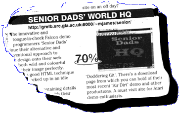

| THIS great review of this website was published in the April 1997 issue of Atari Computing! Bear in mind that this review took place before we started upgrading various bits of our website!! | |

 |
SENIOR DAD'S
WORLD HQ
http://greIb.src.gIa.ac.uk:8000/~mjames/senior/ THE innovative and tongue-in-cheek Falcon demo programmers 'Senior Dads' continue their alternative and unconventional approach to graphic design onto their web site. It's both wild and colourful and suits their image perfectly. The site uses good HTML technique and wasn't knocked up in an idle moment. There are pages containing details of each group member, with their flattering nicknames such as 'Doddering Git'. There's a download page from which you can hold of their most recent 'Air Dirt' demo and other productions. A must visit site for Atari demo enthusiasts. Rating: 70% Jonathon Nott |